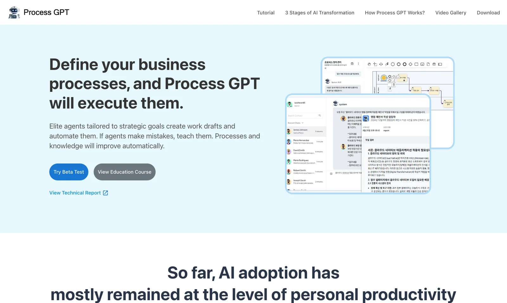
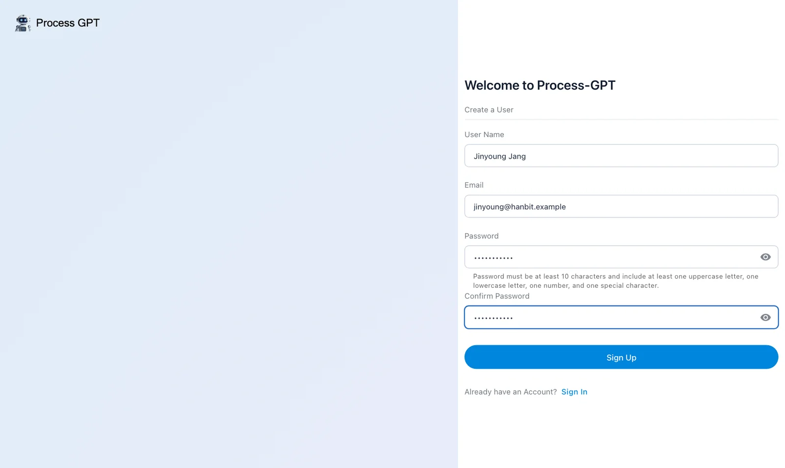
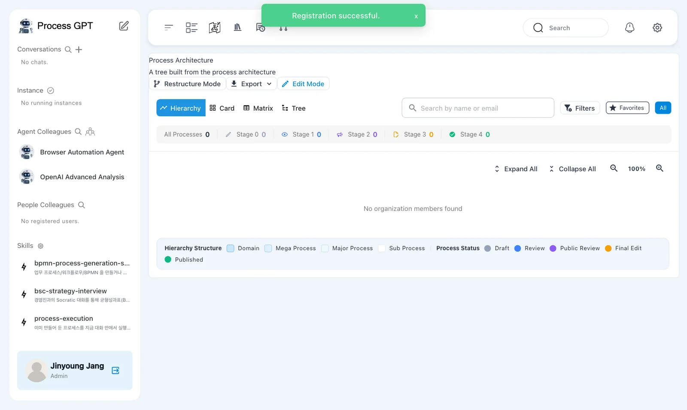
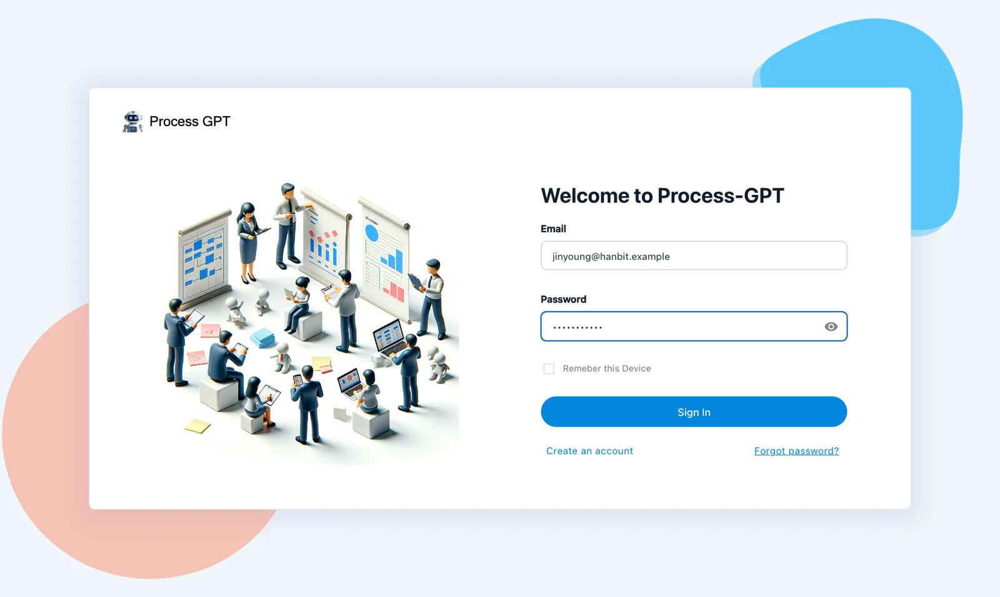

Install Process GPT on your computer with Docker, then create the first account at http://localhost:8088 and sign in as the admin. The first person to sign up becomes the admin of this company (this install).
What gets installed#
Process GPT is made of several services. One install repository, process-gpt-infra-docker, downloads and starts them all.
| Service | What it does |
|---|---|
| frontend · nginx | The screens and the entry point (http://localhost:8088) |
| Supabase (db, auth, rest, storage …) | Database, sign-in, files |
| completion · polling-service | Process execution engine |
| deepagents | Deep Agent — the AI that reads documents and creates processes and agents |
| memento | Knowledge Base (stores and searches documents) |
| bpmn-extractor | Converter that turns documents (PDF) into processes |
The version this tutorial uses
The screens in this tutorial were captured on an install that includes the fix branches of the install repository and each service. Until the fixes are merged into the default branches, use the fix/fresh-install branch of the install repository. Check their status in the fix list for this tutorial.
Before you start#
| Item | Details |
|---|---|
| Docker | Docker Desktop (macOS, Windows) or Docker Engine (Linux). Give Docker 12 GB of memory or more |
| Git | To download the repository |
| OpenAI API key | Used for chat and document search. Create one at platform.openai.com |
| Disk | 70 GB or more free for images and data |
Apple Silicon Mac
Most service images are built for Intel (amd64), so turn on "Use Rosetta for x86/amd64 emulation" in Docker Desktop (Settings › General). The install repository already sets the platform for each image, so there's nothing else to do.
Try it 1 — Download and configure#
Paste these into a terminal, one after another.
git clone https://github.com/uengine-oss/process-gpt-infra-docker.git
cd process-gpt-infra-docker
git checkout fix/fresh-install
cp .env.example .env
Open .env in an editor and change the top four lines to OpenAI. Put your key where it says sk-….
LLM_MODEL=gpt-4.1
LLM_PROXY_URL=https://api.openai.com/v1
LLM_PROXY_API_KEY=sk-…
OPENAI_API_KEY=sk-…
Be sure to change the defaults
The defaults in .env.example point to an external LLM server used by the development team. If you leave them, your chats go to that server. Change the four lines above to your own OpenAI key before you start. Keep the key only in .env and don't paste it anywhere else.
Try it 2 — Open a workspace for Deep Agent#
When Deep Agent creates process files, it starts a small work container (a sandbox) with Docker. For that, the deepagents service needs to reach Docker on your computer. In the same folder, create a file docker-compose.override.yml with the content below.
services:
deepagents:
volumes:
- deepagents-workspace:/app/workspace
- /var/run/docker.sock:/var/run/docker.sock
volumes:
deepagents-workspace:
Connect the Docker socket only on your own computer
Connecting /var/run/docker.sock lets the deepagents container control Docker on your computer. Do this only on your own practice computer, never on a shared server. Without this file, Deep Agent answers that its sandbox isn't available and can't create process files (Chapter 12).
Try it 3 — Start it up#
./start-all-services.sh frontend completion polling-service memento bpmn-extractor
The first time takes tens of minutes to download the images. After that, starting again takes under a minute. The launcher starts the database and sign-in services first, creates the tables the screens use (db-migrate), and opens the entry point (nginx) last. Services you didn't name (deepagents and others) also start when they're needed.
Stop and start again
Stop with ./stop-all-services.sh and start again with the same ./start-all-services.sh … command. Your data stays. To start over from scratch, run ./stop-all-services.sh --wipe and then start (this deletes all data).
Try it 4 — First sign-up and sign-in#
- Open http://localhost:8088 in a browser. The Process GPT landing page appears.
- Click the blue Try Beta Test in the middle to open the sign-in screen.
- Click Create an account at the bottom, fill in your name, email and password, and click Sign Up. In this tutorial, sign up as sales team lead Jinyoung Jang (
jinyoung@hanbit.example). - “Registration successful.” appears, you're signed in right away, and the Process Architecture opens. When you see your name and Admin at the bottom of the sidebar, installation and sign-up are done.
- From then on, sign in on the sign-in screen with the same email and password.




Emails are not verified
A local install doesn't send email, so the address you sign up with doesn't have to be one you can actually receive mail at. It does need a dot after the @ (name@company.example). The first person to sign up is the admin; anyone who signs up later at the same URL becomes a regular user of this company (Chapter 18).
Next chapter#
Installation and sign-up are done. In the next chapter, you'll take a tour of the screens and learn where to do what (Chapter 2).
Check your understanding
- Which four lines in
.envmust you change, and what happens if you don't? - What doesn't work without
docker-compose.override.yml? - Is the second person to sign up on the same install an admin?
Answers
LLM_MODEL,LLM_PROXY_URL,LLM_PROXY_API_KEYandOPENAI_API_KEY. If you leave them, chats go to the development team's external LLM server. Change them to your OpenAI key andhttps://api.openai.com/v1.- Deep Agent can't start its work container (sandbox), so creating process files (Chapter 12) stops. Deep Agent answers that its sandbox isn't available.
- No. Only the first person to sign up is the admin; everyone after that joins as a regular user.